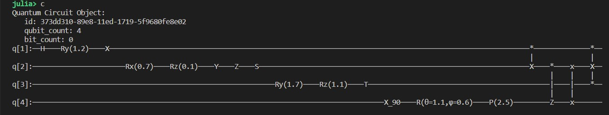
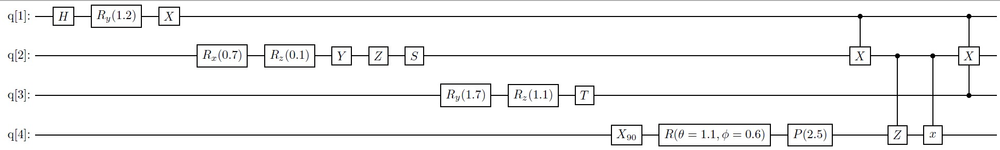

Shovel Documentation
The Shovel package contains a set of useful functions for scientists using the Qube computer.
Shootuntil method
The goal of this method is to simplify life of quantum circuit designers. Since a quantum computer is probabilistic, a circuit must be run several time in order to get a good idea of the resulting proportion of each possible measurement outcomes.
So instead of guessing the sutable number of trial, the user of shootuntil is offered to define a confidence interval and a probability of being inside it. The function shootuntil will perform sequential shots of the circuit until it reached the desired level of confidence requested by the user.
The user has the possibility of defining a linear combinaison of the possible outcomes. If, for instance, the probability of {0,...0} (all zeros) is desired, then the linear combinasion [1,0,...0] will be used. If, on the other hand, we seek the probability that the last qubit is equal to 0, than, all measurements ending with zero is to be estimated. Then, the proper linear combinasion is given by [0,1,0,1,...0,1] ("0,1" repeated).
Shovel.shootuntilresult — Typeshootuntilresult is a structure containing the results of shootuntil function. It is intended to be reused by another package to perform analysis.
Members
gamma::Float64the probability that the estimated parameter is farther than Delta from the true value.Delta::Float64the disired distance between estimator and true value.circuit::QuantumCircuitthe circuit being analysed.samplesize::Int64the resulting sample size.Proportions::Vector{Float64}the relative frequencies of each possilble measurements of the circuit.funvalue::Float64the value of the function of the linear combinaison measured.variancefun::Float64the variance of the function of the linear combinaison.
After running several shots of a quantum circuit using shootuntil the output is summarized into this structure and can be reused for further statistical analysis. Only the final frequency table of the shots are available since this constitute an exhaustive statistics for the results.
Shovel.printshootresult — Functionprintshootresult(io::IO, shrslt::shootuntilresult)Pretty print of the shootuntilresult structure.
Shovel.shootuntil — Functionshootuntil(fun::Function, circuit::QuantumCircuit, Δ::Float64, γ::Float64, linearcoef::Vector{Float64}, verbose::Bool=false, estimate::Bool=false, ignorefun::Bool=false)::shootuntilresult
shootuntil(circuit::QuantumCircuit, Δ::Float64, γ::Float64, linearcoef::Vector{Float64}, verbose=false, estimate=false)::shootuntilresultRuns a circuit until there is a probability 1-γ that the precision Δ is reached for each of the state measurements.
Arguments
fun::function: is a function you want to calculate on the resulting proportion estimate on the final state of the circuit. For instance "sqrt" to get |α| instead of |α|^2. The function must take a Float64 as and input and return a Float64circuit::QuantumCircuit: a QuantumCircuit as defined by SnowflakeΔ::Float64: the difference between the real value and the estimationγ::Float64: the probability that the estimator is more that Δ apart from the true value.linearcoef::Vector{Float64}: a vector of size 2^q, where q is the number of qubit in the circuit (q=circuit.qubit_count). It is a linear combination of the probabilities of the possible bit states after measurement. For more details please see here.verbose::boolean: println usefull information on screen if needed for estimating suitable for Δ and γ.estimate::boolean: this will prevent the fuction to run past the log(1-γ)/log(1-Δ) limit which is enough to get a rough estimation of the number of shots required to reach the desired precision.
The second version is the same but without the function.
Example
julia> c = QuantumCircuit(qubit_count = 3, bit_count=0);
... ( a bunch of "push_gate!() to define the circuit c goes here)
julia> linear_coefficient = [1.0, 0.0, 1.0, 0.0, 1.0, 0.0, 1.0, 0.0];
julia> result = Shovel.shootuntil(sqrt, c, 0.001, 0.05, linear_coefficient, true);
starting iterative process
Minimal number of iteration = 52
Coefficient H(γ,Δ) = 3.8414588206941388e6
52 iterations done. fun()=0.970725343394151
linear combinaison=0.9423076923076923 fun(linear combinaison)=0.970725343394151 derivative fun=0.5150788261477635
The estimated required number of iterations is equal to 55406
We need to continue
27729 iterations done. fun()=0.9364186034730589
linear combinaison=0.8768798009304339 fun(linear combinaison)=0.9364186034730589 derivative fun=0.5339493250440253
The estimated required number of iterations is equal to 118241
72985 iterations done. fun()=0.9355470798948244
linear combinaison=0.875248338699733 fun(linear combinaison)=0.9355470798948244 derivative fun=0.5344467342494053
The estimated required number of iterations is equal to 119808
96396 iterations done. fun()=0.9358606183038087
linear combinaison=0.8758350968919872 fun(linear combinaison)=0.9358606183038087 derivative fun=0.5342676801416424
The estimated required number of iterations is equal to 119244
107820 iterations done. fun()=0.9358083885129101
linear combinaison=0.8757373400111297 fun(linear combinaison)=0.9358083885129101 derivative fun=0.5342974989674953
The estimated required number of iterations is equal to 119338
113579 iterations done. fun()=0.9357784160216117
linear combinaison=0.8756812438919167 fun(linear combinaison)=0.9357784160216117 derivative fun=0.534314612247011
The estimated required number of iterations is equal to 119392
116485 iterations done. fun()=0.9357934167306433
linear combinaison=0.8757093187964116 fun(linear combinaison)=0.9357934167306433 derivative fun=0.534306047212163
The estimated required number of iterations is equal to 119365
117925 iterations done. fun()=0.9358295661561952
linear combinaison=0.8757769768920924 fun(linear combinaison)=0.9358295661561952 derivative fun=0.5342854079098958
The estimated required number of iterations is equal to 119300
119300 iterations done. fun()=0.9358466141219156
linear combinaison=0.8758088851634536 fun(linear combinaison)=0.9358466141219156 derivative fun=0.5342756750272848
The estimated required number of iterations is equal to 119269
We're done
Final number of iterations = 119300
julia> println(result)
γ=0.05
Δ =0.001
Circuit: Quantum Circuit Object:
id: 65e73d60-87e4-11ed-15b5-e3057c69e742
qubit_count: 3
bit_count: 0
q[1]:--Ry(0.1)--------------------------*----*-------------------------------*--
| | |
q[2]:-------------Ry(0.2)---------------X----|---------------*----Ry(0.5)----X--
| |
q[3]:------------------------Ry(0.3)---------X----Ry(0.4)----X------------------
Number of shots=119300
Proportions:
[0.804777870913663, 0.0942246437552389, 0.06854149203688181, 0.02992455993294216, 0.002321877619446773, 0.0, 0.00016764459346186087, 4.191114836546522e-5]
Estimated value of function=0.9358466141219156
Variance of estimate=0.031047788828476044Details of the circuit does not matter but, since it is a 3-qubits circuit, it has 8 possible outcomes for which the relative proportions are given. The linear combinaison is such that the proportion of the first qubit being equal to 0 is used and the square root of that proportion is used for the stopping rule.
Meta Quantum Circuits (shMQC)
The idea of a meta quantum circuit is to help circuit designers to easily reuse already defined circuits. If, for instance, one has a circuit V producing a result that needs to be incerted into a larger circuit. It suffise to define how this circuit is "plugged" with the other elements and let shsew build the resulting circuit.
Shovel.Plug — TypePlug(c::QuantumCircuit, qb::Int)Members
circuit::QuantumCircuitqubit::Inta valid qubit number within the above circuit (1 ≤ qubit ≤ circuit.qubit_count)
Plug is a structure containing the UUID of a Snowflake quantum circuit and a qubit number. It is the building block of a Connector. The only validation done is that the qubit number of the circuit is valid (>0 and <=qubit_count).
The comparison operator "==" is defined for plugs and returns true with both plugs connect the same qubits of the same circuits.
Example
julia> plg = Plug(c, 1)
Circuit id: f5335690-885a-11ed-3814-393fb2ae6861 qubit: 1
julia> plg2 = Plug(c,2)
Circuit id: f5335690-885a-11ed-3814-393fb2ae6861 qubit: 2
julia> plg == plg2
falseShovel.Connector — TypeConnector(plg1::Plug, plg2::Plug)
Connector(c1::QuantumCircuit, qb1::Int, c2::QuantumCircuit, qb2::Int)Connector is a structure containing two plugs: 1) the input plug which is when the qubit/circuit is coming from and 2) the output plug indicating to which qubit/circuit it is going to. Users can either create plugs and then a connector from them or directly create a connector by providing the circuit and the qubit.
The comparison operator "==" is defined for connectors and returns true if they have the same plugs from the same circuits IN THE SAME ORDER. If the two connectors have the same plugs but in REVERSE order, then function isinverse should be used to check.
The two other members are used to order them within a shMQC and need not be documented at initialization time.
Members
plugin::Plugthe begining of the connector (circuit & qubit).plugout::Plugthe end of the connector (circuit & qubit).stage::Intnot needed at construction time.wire::Intnot needed at construction time.
Example
In the example above, the connector is crated directly without the use of plugs. However, these will be created in the connector. Members "stage" and "wire" are used only within the shMQC at the final construction phase shsew
julia> c1 = QuantumCircuit(qubit_count=4, bit_count=0);
julia> c2 = QuantumCircuit(qubit_count=4, bit_count=0);
julia> con1_1 = Connector(c1, 2, c2, 1)
Plugin = Circuit id: 84fbcf80-8880-11ed-354f-3dafa0e9bdc6 qubit: 2
Plugout = Circuit id: 89614c80-8880-11ed-160b-75d0fd206f1d qubit: 1Shovel.isinverse — Functionisinverse(connec1::Connector, connec2::Connector)::BoolA function to checks if a given connector is the inverse of another one. The function is used for internal consistency when a connector is added to an MQC. it will return true if "connec1.plugin == connec2.plugout && connec1.plugin == connec2.plugout" and false otherwise.
Example
As can be seen in the example above, the second connector is define as the inverse of the first. Since a shMQC cannot contain contradictory path, this function is used to exclude this type of situation.
julia> con1_1 = Connector(c1, 2, c2, 1)
Plugin = Circuit id: 84fbcf80-8880-11ed-354f-3dafa0e9bdc6 qubit: 2
Plugout = Circuit id: 89614c80-8880-11ed-160b-75d0fd206f1d qubit: 1
julia> con1_2 = Connector(c2, 1, c1, 2)
Plugin = Circuit id: 89614c80-8880-11ed-160b-75d0fd206f1d qubit: 1
Plugout = Circuit id: 84fbcf80-8880-11ed-354f-3dafa0e9bdc6 qubit: 2
julia> isinverse(con1_1, con1_2)
trueShovel.isbefore — Functionisbefore(connec1::Connector, connec2::Connector)::BoolA function to checks if the output plug of connec1 is the same as the input plug of connec2. If true, it means that connec1 is just before connec2 and they are connected together in the same wire.
Example
Three circuits are created and connector con11 goes from c1 to c2 while con12 goes from c2 to c3. Additionally, the starting qubit of con12 is the same as the ending qubit of con11. Therefore cont11 is before con12.
julia> c1 = QuantumCircuit(qubit_count=4, bit_count=0);
julia> c2 = QuantumCircuit(qubit_count=4, bit_count=0);
julia> c3 = QuantumCircuit(qubit_count=4, bit_count=0);
julia> con1_1 = Connector(c1, 2, c2, 1)
Plugin = Circuit id: 71b5cfa0-8882-11ed-0999-6ff9e4725693 qubit: 2
Plugout = Circuit id: 76869190-8882-11ed-12cd-8935492334e6 qubit: 1
julia> con1_2 = Connector(c2, 1, c3, 1)
Plugin = Circuit id: 76869190-8882-11ed-12cd-8935492334e6 qubit: 1
Plugout = Circuit id: 802c0d10-8882-11ed-1449-7b4ca7f5e3a1 qubit: 1
julia> isbefore(con1_1, con1_2)
trueShovel.Wire — TypeWireThe structure Wire is used to position Connectors into a shMQC. It is created while sewing the circuits together using shsew and not normally used by end users. Connectors belonging to the same wire are all connected to each other in a sequential order ( [isbefore])(@ref) is therefore true for two subsequent connectors in the connector_list.
Members
order::Intin the shMQC the wires are ordered from top (=1) to buttom.connector_list::Vector{Connector}is a list ofConnectors composing the Wire.
Shovel.ismember — Functionismember(connec::Connector, wire::Wire)::Bool
ismember(plg::Plug, wire::Wire)::BoolChecks if a given Connector or Plug is already in a Wire. Another internal function checking if a connector is part of a given wire in a shMQC. This is an iternal fuction not needed by end users.
Shovel.shprintlightQC — FunctionshprintlightQC(io::IO, circuit::QuantumCircuit)A quick display of basic info on a QuantumCircuit. Sometime there is too much information when displaying QuantumCircuit information.
Example
julia> c1
Quantum Circuit Object:
id: 71b5cfa0-8882-11ed-0999-6ff9e4725693
qubit_count: 4
bit_count: 0
q[1]:──H────*────X────*───────────────────*────Z──
| | | |
q[2]:───────X─────────Z──────────────*────|────|──
| | |
q[3]:──────────────────────H─────────|────Z────|──
| |
q[4]:───────────────────────────H────Z─────────*──
julia> shprintlightQC(stdout, c1)
circuit id: 71b5cfa0-8882-11ed-0999-6ff9e4725693 qubit_count = 4 pipeline size = 9Shovel.shMQC — TypeThe structure shMQC is the main element of the Meta Quantum Circuit utility. After adding Snowflake QuantumCircuits and Connectors to it, a quantikz/LaTeX file can be produced and, most importantly, a new circuit can be generated from the shMQC.
The main use of shMQC is to build larger circuits using alreday available circuits by plugin them together.
Members
circuit_list::Vector{QuantumCircuit}connector_list::Vector{Connector}wire_list::Vector{Wire}
The circuitlist and connectorlist are self-explanatory. The wire_list is build by the shsew function to align all elements together.
Shovel.shMQCAddCircuit — FunctionshMQCAddCircuit(mqc::MQC, newc::QuantumCircuit)::BoolThis function is used to add a Snowflake QuantumCircuit to a shMQC. A given circuit cannot be add twice ot the shMQC. However, two distinct circuits with identical circuitry can as long as their id is different. The function will retrun true if the addition was successful. The addition is successful is it retrurs true. Otherwise, the circuit is probably already in the shMQC.
Example
julia> mqc = shMQC();
julia> shMQCAddCircuit(mqc, c1)
trueShovel.shMQCAddConnector — FunctionshMQCAddConnector(mqc::shMQC, connec::Connector)::BoolThis function is used to add a connector to an MQC. It has several consistancy checks and will return false if the proposed connector creates inconsistencies such as circular circuitry (a list of connector looping back to the initial circuit) or duplicate Connectors.
Example 1
In this example a connector is to be added but the end part of the connector was not added to the shMQC. Hece it will fail for not finding it.
julia> mqc = shMQC();
julia> shMQCAddCircuit(mqc, c1);
julia> shMQCAddConnector(mqc, con1_1)
At least one circuits defined in the plugs of the connector are not in the circuit list of the shMQC. Noting to connect toExample 2
Now the two end are in the shMQC
julia> mqc = shMQC();
julia> shMQCAddCircuit(mqc, c1);
julia> shMQCAddCircuit(mqc, c2);
julia> shMQCAddConnector(mqc, con1_1)
trueShovel.printshMQC — FunctionprintshMQC(io::IO, mqc::shMQC)Summary print of what's inside a shMQC.
Example
In the example abva, 5 circuits are added into a shMQC, using shMQCAddCircuit, and several connectors, using [shMQCAddConnector]@(ref) defining the piping of the shMQC.
julia> mqc = shMQC();
julia> shMQCAddCircuit(mqc, c1);
julia> shMQCAddCircuit(mqc, c2);
julia> shMQCAddCircuit(mqc, c3);
julia> shMQCAddCircuit(mqc, c4);
julia> shMQCAddCircuit(mqc, c5);
julia> shMQCAddConnector(mqc, con1_1);
julia> shMQCAddConnector(mqc, con1_2);
julia> shMQCAddConnector(mqc, con1_3);
julia> shMQCAddConnector(mqc, con2_1);
julia> shMQCAddConnector(mqc, con2_2);
julia> shMQCAddConnector(mqc, con2_3);
julia> shMQCAddConnector(mqc, con3_1);
julia> shMQCAddConnector(mqc, con3_2);
julia> shMQCAddConnector(mqc, con3_3);
julia> shMQCAddConnector(mqc, con4_1);
julia> shMQCAddConnector(mqc, con4_2);
julia> shMQCAddConnector(mqc, con4_3);
julia> mqc
The shMQC is made of these circuits:
circuit id: 24a8c970-8886-11ed-3438-9f8d7f11f419 qubit_count = 4 pipeline size = 9
circuit id: 24b68510-8886-11ed-211f-c9940c38b4a6 qubit_count = 4 pipeline size = 9
circuit id: 24c48ed0-8886-11ed-3ef0-994877b2a905 qubit_count = 4 pipeline size = 9
circuit id: 24d61b00-8886-11ed-1cc7-173c101871b8 qubit_count = 4 pipeline size = 9
circuit id: 24def4a0-8886-11ed-15e9-d90899ad2133 qubit_count = 6 pipeline size = 14
And these connector
Connector 1
Plugin = Circuit id: 24a8c970-8886-11ed-3438-9f8d7f11f419 qubit: 2
Plugout = Circuit id: 24b68510-8886-11ed-211f-c9940c38b4a6 qubit: 1
Connector 2
Plugin = Circuit id: 24a8c970-8886-11ed-3438-9f8d7f11f419 qubit: 3
Plugout = Circuit id: 24b68510-8886-11ed-211f-c9940c38b4a6 qubit: 2
Connector 3
Plugin = Circuit id: 24a8c970-8886-11ed-3438-9f8d7f11f419 qubit: 4
Plugout = Circuit id: 24b68510-8886-11ed-211f-c9940c38b4a6 qubit: 3
Connector 4
Plugin = Circuit id: 24b68510-8886-11ed-211f-c9940c38b4a6 qubit: 2
Plugout = Circuit id: 24c48ed0-8886-11ed-3ef0-994877b2a905 qubit: 1
Connector 5
Plugin = Circuit id: 24b68510-8886-11ed-211f-c9940c38b4a6 qubit: 3
Plugout = Circuit id: 24c48ed0-8886-11ed-3ef0-994877b2a905 qubit: 2
Connector 6
Plugin = Circuit id: 24b68510-8886-11ed-211f-c9940c38b4a6 qubit: 4
Plugout = Circuit id: 24c48ed0-8886-11ed-3ef0-994877b2a905 qubit: 3
Connector 7
Plugin = Circuit id: 24c48ed0-8886-11ed-3ef0-994877b2a905 qubit: 2
Plugout = Circuit id: 24d61b00-8886-11ed-1cc7-173c101871b8 qubit: 1
Connector 8
Plugin = Circuit id: 24c48ed0-8886-11ed-3ef0-994877b2a905 qubit: 3
Plugout = Circuit id: 24d61b00-8886-11ed-1cc7-173c101871b8 qubit: 2
Connector 9
Plugin = Circuit id: 24c48ed0-8886-11ed-3ef0-994877b2a905 qubit: 4
Plugout = Circuit id: 24d61b00-8886-11ed-1cc7-173c101871b8 qubit: 3
Connector 10
Plugin = Circuit id: 24d61b00-8886-11ed-1cc7-173c101871b8 qubit: 1
Plugout = Circuit id: 24def4a0-8886-11ed-15e9-d90899ad2133 qubit: 3
Connector 11
Plugin = Circuit id: 24d61b00-8886-11ed-1cc7-173c101871b8 qubit: 3
Plugout = Circuit id: 24def4a0-8886-11ed-15e9-d90899ad2133 qubit: 2
Connector 12
Plugin = Circuit id: 24d61b00-8886-11ed-1cc7-173c101871b8 qubit: 4
Plugout = Circuit id: 24def4a0-8886-11ed-15e9-d90899ad2133 qubit: 5Shovel.shsew — Functionshsew(mqc::shMQC)::QuantumCircuitThis function takes an shMQC and returns a standard Snowflake QuantumCircuit equivalent. This is the main goal of the shMQC concept.
Example
A shMQC is created with 5 circuits and 12 connectors. The resulting quantum circuit is then created by sewing all pieces together.
julia> mqc
The shMQC is made of these circuits:
circuit id: 9c9b32e0-8888-11ed-0a20-f12af1106257 qubit_count = 4 pipeline size = 9
circuit id: 9ca6cba0-8888-11ed-375f-ef0c51f31fc8 qubit_count = 4 pipeline size = 9
circuit id: 9cb39ce0-8888-11ed-05d5-bff313ab1874 qubit_count = 4 pipeline size = 9
circuit id: 9cc3062e-8888-11ed-2d41-45f511d1ab58 qubit_count = 4 pipeline size = 9
circuit id: 9ccb6aa0-8888-11ed-02ee-d37c6c44d379 qubit_count = 6 pipeline size = 14
And these connector
Connector 1
Plugin = Circuit id: 9c9b32e0-8888-11ed-0a20-f12af1106257 qubit: 2
Plugout = Circuit id: 9ca6cba0-8888-11ed-375f-ef0c51f31fc8 qubit: 1
Connector 2
Plugin = Circuit id: 9c9b32e0-8888-11ed-0a20-f12af1106257 qubit: 3
Plugout = Circuit id: 9ca6cba0-8888-11ed-375f-ef0c51f31fc8 qubit: 2
Connector 3
Plugin = Circuit id: 9c9b32e0-8888-11ed-0a20-f12af1106257 qubit: 4
Plugout = Circuit id: 9ca6cba0-8888-11ed-375f-ef0c51f31fc8 qubit: 3
Connector 4
Plugin = Circuit id: 9ca6cba0-8888-11ed-375f-ef0c51f31fc8 qubit: 2
Plugout = Circuit id: 9cb39ce0-8888-11ed-05d5-bff313ab1874 qubit: 1
Connector 5
Plugin = Circuit id: 9ca6cba0-8888-11ed-375f-ef0c51f31fc8 qubit: 3
Plugout = Circuit id: 9cb39ce0-8888-11ed-05d5-bff313ab1874 qubit: 2
Connector 6
Plugin = Circuit id: 9ca6cba0-8888-11ed-375f-ef0c51f31fc8 qubit: 4
Plugout = Circuit id: 9cb39ce0-8888-11ed-05d5-bff313ab1874 qubit: 3
Connector 7
Plugin = Circuit id: 9cb39ce0-8888-11ed-05d5-bff313ab1874 qubit: 2
Plugout = Circuit id: 9cc3062e-8888-11ed-2d41-45f511d1ab58 qubit: 1
Connector 8
Plugin = Circuit id: 9cb39ce0-8888-11ed-05d5-bff313ab1874 qubit: 3
Plugout = Circuit id: 9cc3062e-8888-11ed-2d41-45f511d1ab58 qubit: 2
Connector 9
Plugin = Circuit id: 9cb39ce0-8888-11ed-05d5-bff313ab1874 qubit: 4
Plugout = Circuit id: 9cc3062e-8888-11ed-2d41-45f511d1ab58 qubit: 3
Connector 10
Plugin = Circuit id: 9cc3062e-8888-11ed-2d41-45f511d1ab58 qubit: 1
Plugout = Circuit id: 9ccb6aa0-8888-11ed-02ee-d37c6c44d379 qubit: 3
Connector 11
Plugin = Circuit id: 9cc3062e-8888-11ed-2d41-45f511d1ab58 qubit: 3
Plugout = Circuit id: 9ccb6aa0-8888-11ed-02ee-d37c6c44d379 qubit: 2
Connector 12
Plugin = Circuit id: 9cc3062e-8888-11ed-2d41-45f511d1ab58 qubit: 4
Plugout = Circuit id: 9ccb6aa0-8888-11ed-02ee-d37c6c44d379 qubit: 5
julia> newcq = shsew(mqc)
Quantum Circuit Object:
id: ac5ded7e-8888-11ed-3316-75f366b5ec40
qubit_count: 10
bit_count: 0
Part 1 of 2
q[1]: ──H────*────X────*───────────────────*────Z─────────────────────────────────────────────────────────────────────────────────────────────────────────────────────────────────────────────────────────────
| | | |
q[2]: ───────X─────────Z──────────────*────|────|────H────*────X────*───────────────────*────Z────────────────────────────────────────────────────────────────────────────────────────────────────────────────
| | | | | | |
q[3]: ──────────────────────H─────────|────Z────|─────────X─────────Z──────────────*────|────|────H────*────X────*───────────────────*────Z───────────────────────────────────────────────────────────────────
| | | | | | | | |
q[4]: ───────────────────────────H────Z─────────*────────────────────────H─────────|────Z────|─────────X─────────Z──────────────*────|────|────H────*────X────*───────────────────*────Z──────────────────────
| | | | | | | | |
q[5]: ────────────────────────────────────────────────────────────────────────H────Z─────────*────────────────────────H─────────|────Z────|─────────X─────────Z──────────────*────|────|──────────────────────
| | | | |
q[6]: ─────────────────────────────────────────────────────────────────────────────────────────────────────────────────────H────Z─────────*────────────────────────H─────────|────Z────|───────────────────X──
| | |
q[7]: ──────────────────────────────────────────────────────────────────────────────────────────────────────────────────────────────────────────────────────────────────H────Z─────────*─────────H─────────|──
|
q[8]: ──────────────────────────────────────────────────────────────────────────────────────────────────────────────────────────────────────────────────────────────────────────────────────H──────────────*──
q[9]: ────────────────────────────────────────────────────────────────────────────────────────────────────────────────────────────────────────────────────────────────────────────────────────────────────────
q[10]:────────────────────────────────────────────────────────────────────────────────────────────────────────────────────────────────────────────────────────────────────────────────────────────────H───────
Part 2 of 2
q[1]: ──────────────────────────────────────────────────
q[2]: ──────────────────────────────────────────────────
q[3]: ──────────────────────────────────────────────────
q[4]: ────────────H──────────────Z─────────X────────────
| |
q[5]: ───────────────────────────|─────────|────────────
| |
q[6]: ───────Z──────────────*────|─────────|─────────*──
| | | | |
q[7]: ───────|──────────────|────|─────────*─────────|──
| | | |
q[8]: ──X────*──────────────|────*────Z──────────────|──
| | |
q[9]: ─────────────────H────Z─────────*─────────X────|──
| |
q[10]:──────────────────────────────────────────*────X──Shovel.shQuantumCircuit — TypeshQuantumCircuitshQuantumCircuit is a structure holding additional descriptive information for rgw Quantum circuits such as a label for circuits and angle information for rotation gates Rx, Ry, R_y and the generic rotation gate.
LaTeX utilities
Snowflake aloows to display a circuit on the screen. However, for scientific resaerch or educational purpose, it is often required to produce a LaTeX document. These utilities allow for a conversion of either a Snowflake circuit or a shMQC into Quantikz/Latex format.
Additionally, it is also possible to display the resulting operator of a circuit into textual forme. The resulting string matrix is often very large and difficult to read but elements of it can be inspected to better understand what is going on. This is usefull only on relatively small circuits and is of educational interest for beginners.
A typical Snowflake circuit such as the above.

Will appear like that once compiled as a Latex/Quantikz file.

Shovel.shLaTeX — FunctionshLaTeX(pattern::String, str::String)::StringThis function will substitute "pattern" inside str by "\pattern". This is mostly used when pattern = sin, cos or sqrt. It is used in the process of formatting states and operator in string format as generated by shoperator
In the example below, all occurence of the string "cos" are replaced by "\cos".
Example
julia> text = "1/sqrt{2}cos(1.2/2)+1/sqrt{2}-sin(1.2/2)cos(0.69/2)cos(1.99/2)+1/sqrt{2}cos(1.2/2)+1/sqrt{2}-sin(1.2/2)sin(0.69/2)-sin(1.99/2)cos(1.99/2)+1/sqrt{2}cos(1.2/2)+1/sqrt{2}";
julia> shLaTeX("cos", text)
"1/sqrt{2}\cos(1.2/2)+1/sqrt{2}-sin(1.2/2)\cos(0.69/2)\cos(1.99/2)+1/sqrt{2}\cos(1.2/2)+1/sqrt{2}-sin(1.2/2)sin(0.69/2)-sin(1.99/2)\cos(1.99/2)+1/sqrt{2}\cos(1.2/2)+1/sqrt{2}"shLaTeX(str::String)::StringThis function will substitute "cos" by "\cos", "sin" by "\sin" and "sqrt" by "\sqrt" in str.
Example
julia> text = "1/sqrt{2}cos(1.2/2)+1/sqrt{2}-sin(1.2/2)cos(0.69/2)cos(1.99/2)+1/sqrt{2}cos(1.2/2)+1/sqrt{2}-sin(1.2/2)sin(0.69/2)-sin(1.99/2)cos(1.99/2)+1/sqrt{2}cos(1.2/2)+1/sqrt{2}"
julia> shLaTeX(text)
"1/\sqrt{2}\cos(1.2/2)+1/\sqrt{2}-\sin(1.2/2)\cos(0.69/2)\cos(1.99/2)+1/\sqrt{2}\cos(1.2/2)+1/\sqrt{2}-\sin(1.2/2)\sin(0.69/2)-\sin(1.99/2)\cos(1.99/2)+1/\sqrt{2}\cos(1.2/2)+1/\sqrt{2}"shLaTeX(c::QuantumCircuit, FName::String)::BoolWill generate a file containing the LaTeX/quantikz code in the standalone documentclass.
Arguments
circuit::QuantumCircuit: a QuantumCircuit as defined by SnowflakeFName::String: the name of the file to create. Warning! It will overwrite if already existing. If omitted it will print to stdout
Example
julia> c = QuantumCircuit(qubit_count=3, bit_count=0);
... (a bunch of "push_gate!" goes here)
julia> shLaTeX(c);
\begin{quantikz}
\lstick{q[1]: } & \gate{H} & \gate{Ry(1.2)} & \qw & \ctrl{1} & \ctrl{2} & \ctrl{1} & \qw & \ctrl{1} & \ctrl{2} & \qw & \qw & \qw \\
\lstick{q[2]: } & \qw & \qw & \qw & \gate{X} & \qw & \gate{X} & \qw & \gate{X} & \qw & \qw & \gate{Rx(-0.29)} & \qw \\
\lstick{q[3]: } & \qw & \qw & \gate{Rx(0.69)} & \qw & \gate{X} & \qw & \gate{Ry(1.99)} & \qw & \gate{X} & \gate{Ry(1.99)} & \qw & \qw
\end{quantikz}This is an example of the output file generated by shLaTeX(). It can be copy&paste to any other Latex document.
\documentclass{standalone}
\usepackage{tikz}
\usetikzlibrary{quantikz}
\begin{document}
\begin{quantikz}
\lstick{q[1]: } & \gate{H} & \gate{Ry(1.2)} & \qw & \ctrl{1} & \ctrl{2} & \ctrl{1} & \qw & \ctrl{1} & \ctrl{2} & \qw & \qw & \qw \\
\lstick{q[2]: } & \qw & \qw & \qw & \gate{X} & \qw & \gate{X} & \qw & \gate{X} & \qw & \qw & \gate{Rx(-0.29)} & \qw \\
\lstick{q[3]: } & \qw & \qw & \gate{Rx(0.69)} & \qw & \gate{X} & \qw & \gate{Ry(1.99)} & \qw & \gate{X} & \gate{Ry(1.99)} & \qw & \qw
\end{quantikz}
\end{document}shLaTeX(mat::Matrix{String})Will convert to LaTeX the operator matrix generated by shoperator A garder??? In the example above a Kroneker product of a CNOT circuit by an Hadamard circuit (both in "string" version) is generated. The function shLaTeX is then used to produce the LaTeX version of it.
julia> mat2 = shcnot(1,2,2);
julia> mat3 = shhadamard();
julia> mat4 = shkron(mat3,mat2)
8×8 Matrix{String}:
"1/sqrt{2}" "0" "0" "0" "1/sqrt{2}" "0" "0" "0"
"0" "1/sqrt{2}" "0" "0" "0" "1/sqrt{2}" "0" "0"
"0" "0" "0" "1/sqrt{2}" "0" "0" "0" "1/sqrt{2}"
"0" "0" "1/sqrt{2}" "0" "0" "0" "1/sqrt{2}" "0"
"1/sqrt{2}" "0" "0" "0" "-1/sqrt{2}" "0" "0" "0"
"0" "1/sqrt{2}" "0" "0" "0" "-1/sqrt{2}" "0" "0"
"0" "0" "0" "1/sqrt{2}" "0" "0" "0" "-1/sqrt{2}"
"0" "0" "1/sqrt{2}" "0" "0" "0" "-1/sqrt{2}" "0"
julia> shLaTeX(mat4)
\begin{bmatrix}
1/\sqrt{2} &0 &0 &0 &1/\sqrt{2} &0 &0 &0 \\
0 &1/\sqrt{2} &0 &0 &0 &1/\sqrt{2} &0 &0 \\
0 &0 &0 &1/\sqrt{2} &0 &0 &0 &1/\sqrt{2} \\
0 &0 &1/\sqrt{2} &0 &0 &0 &1/\sqrt{2} &0 \\
1/\sqrt{2} &0 &0 &0 &-1/\sqrt{2} &0 &0 &0 \\
0 &1/\sqrt{2} &0 &0 &0 &-1/\sqrt{2} &0 &0 \\
0 &0 &0 &1/\sqrt{2} &0 &0 &0 &-1/\sqrt{2} \\
0 &0 &1/\sqrt{2} &0 &0 &0 &-1/\sqrt{2} &0 \\
\end{bmatrix}shLaTeX(mqc::shMQC, FName = "")::BoolArguments
mqc::shMQC: a Meta Quantum Circuit as defined by ShovelFName::String: the name of the file to create. Warning! It will overwrite if already existing. If omitted it will print to stdout
A shMQC is usually large and only used as an intermediate step before being transformed into a Snowflake QuantumCircuit. It is nevertheless possible to produce a meaningful LaTeX output that can be analysed for troubleshooting.
Example
julia> shLaTeX(mqc, "Foo.bar")Shovel.shstrmult — Functionshstrmult(s1::String, s2::String)::String will lexicographically multiply (concatenate) two strings.The concatenation will follow the following rules: shstrmult("0", "a string") => "0" shstrmult("1", "a string") => "a string" shstrmult("a string", "0") => "0" shstrmult("a string", "1") => "a string" Otherwise shstrmult("a string", "-a second string") => "a string-a second string"
The arithmetic defined by shstrmult is at the base of the arithmetic of matric multiplication shmult and Kroneker product shkron of string matrix for operators.
julia> a = "0" ; b= "a string";
julia> shstrmult(a,b)
"0"
julia> c = "1";
julia> shstrmult(c,b)
"a string"
julia> shstrmult(c,a)
"0"Shovel.shmult — Functionshmult(mat1::Matrix{String}, mat2::Matrix{String})::Matrix{String} will perform the lexicographic multiplication of two string matrices. It is based on the rules for function shstrmult()This will perform the matrix multiplication mat1 × mat2 using String matrices using the same rules as shstrmult.
Parameters
- mat1 and mat2 have to satisfy size(mat1)[2] == size(mat2)[1]
The return matrix will have size (size(mat1)[1], size(mat2)[2])
Example 1
julia> A = [ "a" "b" ; "c" "d" ];
julia> B = [ "e" "f" ; "g" "h" ; "i" "j" ];
julia> C = shmult(B, A)
3×2 Matrix{String}:
"ea+fc" "eb+fd"
"ga+hc" "gb+hd"
"ia+jc" "ib+jd"Example 2
julia> A = [ "1" "b" ; "c" "0" ];
julia> B = [ "e" "f" ; "g" "h" ; "i" "j" ];
julia> C = shmult(B, A)
3×2 Matrix{String}:
"e+fc" "eb"
"g+hc" "gb"
"i+jc" "ib"As can be seen in the second example, the fact that A[1,1] = "1" makes it irrelevant and it is simply remove ( "1" * "anystring" = "anystring"). Hereas, A[2,2] = "0" which implies that and multiplycation results into "0" and will be removed unless it is alone ("0" + "anystring" = "anystring", but "0" + nothing = "0")
Shovel.shkron — Functionshkron(mat1::Matrix{String}, mat2::Matrix{String})::Matrix{String} will perform the lexicographic Kroneker product of two matrices.Kroneker product of two string matrices. Here again, the logic of shstrmult is used to remove unneeded "0" and "1"
Example 1
julia> A = [ "a" "b" ; "c" "d" ];
julia> B = [ "e" "f" ; "g" "h" ; "i" "j" ];
julia> C = shkron(B, A)
6×4 Matrix{String}:
"ea" "eb" "fa" "fb"
"ec" "ed" "fc" "fd"
"ga" "gb" "ha" "hb"
"gc" "gd" "hc" "hd"
"ia" "ib" "ja" "jb"
"ic" "id" "jc" "jd"Example 2
In this second example a value of B is equal to "0" and another is equal to "1".
julia> A = [ "a" "b" ; "c" "d" ];
julia> B = [ "e" "0" ; "1" "h" ; "i" "j" ];
julia> C = shkron(B, A)
6×4 Matrix{String}:
"ea" "eb" "0" "0"
"ec" "ed" "0" "0"
"a" "b" "ha" "hb"
"c" "d" "hc" "hd"
"ia" "ib" "ja" "jb"
"ic" "id" "jc" "jd"Shovel.shrx — Functionshrx(gate::Gate)::Matrix{String}Returns the string expression of the operator of gate doing a rotation around the X axis using the information provided in a Gate (gate.parameters[1]).
Example
julia> gate = rotation_x(2, 0.20)
Gate Object:
instruction symbol: rx
parameters: [0.2]
targets: [2]
operator:
(2, 2)-element Snowflake.Operator:
Underlying data Matrix{Complex}:
0.9950041652780258 + 0.0im 0.0 - 0.09983341664682815im
0.0 - 0.09983341664682815im 0.9950041652780258 + 0.0im
julia> shrx(gate)
2×2 Matrix{String}:
"cos(0.2/2)" "sin(0.2/2)"
"sin(0.2/2)i" "cos(0.2/2)"Shovel.shry — Functionshry(gate::Gate)::Matrix{String}Returns the Latex expression of the operator of gate doing a rotation around the Y axis using the information provided in a Gate (gate.parameters[1]).
Example
julia> gate = rotation_y(1, 1.3)
Gate Object:
instruction symbol: ry
parameters: [1.3]
targets: [1]
operator:
(2, 2)-element Snowflake.Operator:
Underlying data Matrix{Complex}:
0.7960837985490558 + 0.0im -0.6051864057360395 - 3.705697973360661e-17im
0.6051864057360395 - 3.705697973360661e-17im 0.7960837985490558 + 0.0im
julia> shry(gate)
2×2 Matrix{String}:
"cos(1.3/2)" "sin(1.3/2)"
"-sin(1.3/2)" "cos(1.3/2)"Shovel.shr — Functionshr(gate::Gate)::Matrix{String}Returns the Latex expression of the operator of gate doing a rotation with θ and ϕ axis using the information provided in shcircuits.
Example
julia> gate = rotation(1, 1.9, 2.1)
Gate Object:
instruction symbol: r
parameters: [1.9, 2.1]
targets: [1]
operator:
(2, 2)-element Snowflake.Operator:
Underlying data Matrix{Complex}:
0.5816830894638835 + 0.0im -0.7021478827116092 + 0.4106496490140421im
0.7021478827116092 + 0.4106496490140421im 0.5816830894638835 + 0.0im
julia> shr(gate)
2×2 Matrix{String}:
"cos(1.9/2}" "-ie^{-i2.1}sin(1.9/2)"
"-ie^{i2.1}sin(1.9/2)" "cos(1.9/2}"Shovel.shhadamard — Functionshry(gate::Gate)::Matrix{String}Returns the Latex expression of the operator of a Hadamard gate no information needs to be provided in shcircuits for that type of circuit.
Example
julia> shhadamard()
2×2 Matrix{String}:
"1/sqrt{2}" "1/sqrt{2}"
"1/sqrt{2}" "-1/sqrt{2}"Shovel.shid — Functionshid()()::Matrix{String}Returns a simple identity matrix in string format.
Example
julia> shid()
2×2 Matrix{String}:
"1" "0"
"0" "1"shid(N::Int)::Matrix{String}Returns the 2^N X 2^N identity matrix in string format.
Example
julia> shid(3)
8×8 Matrix{String}:
"1" "0" "0" "0" "0" "0" "0" "0"
"0" "1" "0" "0" "0" "0" "0" "0"
"0" "0" "1" "0" "0" "0" "0" "0"
"0" "0" "0" "1" "0" "0" "0" "0"
"0" "0" "0" "0" "1" "0" "0" "0"
"0" "0" "0" "0" "0" "1" "0" "0"
"0" "0" "0" "0" "0" "0" "1" "0"
"0" "0" "0" "0" "0" "0" "0" "1"Shovel.shcnot — Functionshcnot()::Matrix{String}Returns the 4x4 CNOT matrix in string format.
Example
julia> shcnot()
4×4 Matrix{String}:
"1" "0" "0" "0"
"0" "1" "0" "0"
"0" "0" "0" "1"
"0" "0" "1" "0"shcnot(crtl::Int, trgt::Int, N::Int)::Matrix{String}Returns, in string format, the CNOT matrix for a set of N qubits where the control qubit is at position crtl and the target is at position trgt wit (trgt>crtl).
Example
julia> shcnot(2,4,4)
16×16 Matrix{String}:
"1" "0" "0" "0" "0" "0" "0" "0" "0" "0" "0" "0" "0" "0" "0" "0"
"0" "1" "0" "0" "0" "0" "0" "0" "0" "0" "0" "0" "0" "0" "0" "0"
"0" "0" "1" "0" "0" "0" "0" "0" "0" "0" "0" "0" "0" "0" "0" "0"
"0" "0" "0" "1" "0" "0" "0" "0" "0" "0" "0" "0" "0" "0" "0" "0"
"0" "0" "0" "0" "0" "1" "0" "0" "0" "0" "0" "0" "0" "0" "0" "0"
"0" "0" "0" "0" "1" "0" "0" "0" "0" "0" "0" "0" "0" "0" "0" "0"
"0" "0" "0" "0" "0" "0" "0" "1" "0" "0" "0" "0" "0" "0" "0" "0"
"0" "0" "0" "0" "0" "0" "1" "0" "0" "0" "0" "0" "0" "0" "0" "0"
"0" "0" "0" "0" "0" "0" "0" "0" "1" "0" "0" "0" "0" "0" "0" "0"
"0" "0" "0" "0" "0" "0" "0" "0" "0" "1" "0" "0" "0" "0" "0" "0"
"0" "0" "0" "0" "0" "0" "0" "0" "0" "0" "1" "0" "0" "0" "0" "0"
"0" "0" "0" "0" "0" "0" "0" "0" "0" "0" "0" "1" "0" "0" "0" "0"
"0" "0" "0" "0" "0" "0" "0" "0" "0" "0" "0" "0" "0" "1" "0" "0"
"0" "0" "0" "0" "0" "0" "0" "0" "0" "0" "0" "0" "1" "0" "0" "0"
"0" "0" "0" "0" "0" "0" "0" "0" "0" "0" "0" "0" "0" "0" "0" "1"
"0" "0" "0" "0" "0" "0" "0" "0" "0" "0" "0" "0" "0" "0" "1" "0"Shovel.shcnot1 — Functionshcnot1(crtl::Int, N::Int)::Matrix{String}This function returns, in string format, the CNOT matrix for a set of N qubits when the control qubit is at position ctrl (ctrl < (N-1)) and the target qubit is right under it (crtl+1). BEWARE! It is assumed here that the control qubit is over the target.
Example
julia> shcnot1(2, 3)
8×8 Matrix{String}:
"1" "0" "0" "0" "0" "0" "0" "0"
"0" "1" "0" "0" "0" "0" "0" "0"
"0" "0" "0" "1" "0" "0" "0" "0"
"0" "0" "1" "0" "0" "0" "0" "0"
"0" "0" "0" "0" "1" "0" "0" "0"
"0" "0" "0" "0" "0" "1" "0" "0"
"0" "0" "0" "0" "0" "0" "0" "1"
"0" "0" "0" "0" "0" "0" "1" "0"Shovel.shoperator — Functionshoperator(c::QuantumCircuit)::Matrix{String}Returns, in string format, the resulting operator of a quantum circuit.
This can give a fairly large matrix difficult to read. However each individual element of it can be displayed, as in the example above to see what is happeneing in the operator.
Example
julia> c = QuantumCircuit(qubit_count=3, bit_count=0);
julia> push_gate!(c, hadamard(1));
julia> push_gate!(c, rotation_y(1, 1.2));
julia> push_gate!(c, rotation_x(3, 0.69));
julia> push_gate!(c, control_x(1,2));
julia> push_gate!(c, control_x(1,3));
julia> push_gate!(c, control_x(1,2));
julia> push_gate!(c, rotation_y(3, 1.99));
julia> push_gate!(c, control_x(1,2));
julia> push_gate!(c, control_x(1,3));
julia> push_gate!(c, rotation_y(3, 1.99));
julia> push_gate!(c, rotation_x(2, -0.29));
julia> mat = shoperator(c)
8×8 Matrix{String}:
"1/sqrt{2}cos(1.2/2)+1/sqrt{2}-s" ⋯ 226 bytes ⋯ ".99/2)-sin(1.99/2)cos(-0.29/2)" … "1/sqrt{2}sin(1.2/2)+1/sqrt{2}co" ⋯ 221 bytes ⋯ "1.99/2)cos(1.99/2)cos(-0.29/2)"
"1/sqrt{2}cos(1.2/2)+1/sqrt{2}-s" ⋯ 228 bytes ⋯ ".99/2)-sin(1.99/2)cos(-0.29/2)" "1/sqrt{2}sin(1.2/2)+1/sqrt{2}co" ⋯ 223 bytes ⋯ "1.99/2)cos(1.99/2)cos(-0.29/2)"
"1/sqrt{2}cos(1.2/2)+1/sqrt{2}-s" ⋯ 227 bytes ⋯ "99/2)-sin(1.99/2)sin(-0.29/2)i" "1/sqrt{2}sin(1.2/2)+1/sqrt{2}co" ⋯ 221 bytes ⋯ "1.99/2)cos(1.99/2)sin(-0.29/2)"
"1/sqrt{2}cos(1.2/2)+1/sqrt{2}-s" ⋯ 229 bytes ⋯ "99/2)-sin(1.99/2)sin(-0.29/2)i" "1/sqrt{2}sin(1.2/2)+1/sqrt{2}co" ⋯ 223 bytes ⋯ "1.99/2)cos(1.99/2)sin(-0.29/2)"
"1/sqrt{2}cos(1.2/2)+-1/sqrt{2}-" ⋯ 230 bytes ⋯ ".99/2)-sin(1.99/2)cos(-0.29/2)" "1/sqrt{2}sin(1.2/2)+-1/sqrt{2}c" ⋯ 225 bytes ⋯ "1.99/2)cos(1.99/2)cos(-0.29/2)"
"1/sqrt{2}cos(1.2/2)+-1/sqrt{2}-" ⋯ 232 bytes ⋯ ".99/2)-sin(1.99/2)cos(-0.29/2)" … "1/sqrt{2}sin(1.2/2)+-1/sqrt{2}c" ⋯ 227 bytes ⋯ "1.99/2)cos(1.99/2)cos(-0.29/2)"
"1/sqrt{2}cos(1.2/2)+-1/sqrt{2}-" ⋯ 231 bytes ⋯ "99/2)-sin(1.99/2)sin(-0.29/2)i" "1/sqrt{2}sin(1.2/2)+-1/sqrt{2}c" ⋯ 225 bytes ⋯ "1.99/2)cos(1.99/2)sin(-0.29/2)"
"1/sqrt{2}cos(1.2/2)+-1/sqrt{2}-" ⋯ 233 bytes ⋯ "99/2)-sin(1.99/2)sin(-0.29/2)i" "1/sqrt{2}sin(1.2/2)+-1/sqrt{2}c" ⋯ 227 bytes ⋯ "1.99/2)cos(1.99/2)sin(-0.29/2)"
julia> mat[1,1]
"1/sqrt{2}cos(1.2/2)+1/sqrt{2}-sin(1.2/2)cos(0.69/2)cos(1.99/2)+1/sqrt{2}cos(1.2/2)+1/sqrt{2}-sin(1.2/2)sin(0.69/2)-sin(1.99/2)cos(1.99/2)+1/sqrt{2}cos(1.2/2)+1/sqrt{2}-sin(1.2/2)cos(0.69/2)sin(1.99/2)+1/sqrt{2}cos(1.2/2)+1/sqrt{2}-sin(1.2/2)sin(0.69/2)cos(1.99/2)-sin(1.99/2)cos(-0.29/2)"Initprob utilities
If a quantum computer is simply viewed as a fancy random number generator, the question is: how can we design a circuit such that the measurements have the disired probability distribution. The library considers the measurements as random variable from a multinomial distribution. This distribution is used to approximate other distribution, discrete or continuous.
This part is still at an early stage and will evolve quickly. Once I master the art of properly initializing a set of qubits it will grow faster.
I need spare time to work on this.
Shovel.shinit1qubit! — Functionshinit1qubit!(probability::Float64)::QuantumCircuitWill return a 1 qubit QuantumCircuit initialized such that its probability of being equal to 0 is equal to "probability"
Shovel.shinit2qubits! — Functionshinit2qubits!(probability::Vector{Float64})::QuantumCircuitWill return a 2 qubits QuantumCircuit initialize such that the probabilities of the 4 possible outcome are equal to the values provided by the vector "probabilities"
Shovel.ZYZdecomposition — FunctionZYZdecomposition(U::Matrix{Complex})::Vector{Float64}
ZYZdecomposition(U::Matrix{Float64})::Vector{Float64}Returns the ZyZ decomposition of a 2x2 unitary matrix: e^α Rz(β) Ry(γ) R_z(δ). The result is a 4 elements vector where the first is alpha, the second is beta, the third is gamma and the last is delta. The second version can be used if U is made of real numbers only.
Returns a vector of #undef if U is not 2x2, or not unitary.
ZYZdecomposition(U::Matrix{ComplexF64})::Vector{Float64}
ZYZdecomposition(U::Matrix{Float64})::Vector{Float64}Returns the ZyZ decomposition of a 2x2 unitary matrix: e^α Rz(β) Ry(γ) R_z(δ). The result is a 4 elements vector where the first is alpha, the second is beta, the third is gamma and the last is delta. The second version can be used if U is made of real numbers only.
Returns a vector of #undef if U is not 2x2, or not unitary.